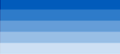
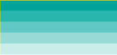
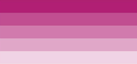
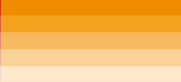
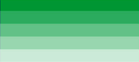
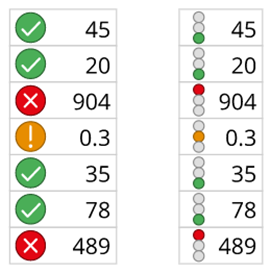

Categorical Data
REVIEWCategorical Data
Categorical data can be divided into groups or categories using names or labels.
It’s best practice to use no more than 4 categories, labels, or series in a chart. Using more can make a chart too cluttered. If suitable, combine categories or focus the chart on a single item.
You can find out more about colour palette on the Civil Service categorical data colour palette page.
For categorical data, you can use the following colours taken from the NHS identity guidelines:
| Colour | Example | Tint | Hex Code |
|---|---|---|---|
| NHS Blue | 100% | #005EB8 | |
| NHS Aqua Green | 100% | #00A499 | |
| NHS Pink | 100% | #AE2573 | |
| NHS Orange | 100% | #ED8B00 | |
| NHS Green | 100% | #009639 | |
| NHS Light Blue | 100% | #41B6E6 | |
| NHS Blue | 50% | #80AFDC | |
| NHS Aqua Green | 50% | #80D2CC | |
| NHS Pink | 50% | #D792B9 | |
| NHS Orange | 50% | #F6C580 | |
| NHS Green | 50% | #80CB9C | |
| NHS Light Blue | 50% | #A0DBF3 |
After using the first 6 colours on a chart, you can use these again with a 50% tint. These should have enough contrast against the background.
Remember that some colours have specific meanings, like blue for links. It’s important to choose the right colour.
You can find out more on the NHS Identity Guidelines page on using tints.
We recommend using our suggested colour palette in the given order to make sure adjacent colours have enough contrast. It’ll also make the colours suitable for users with a range of colour vision deficiencies (colour blindness).
You can find outmore about colour palette on the Civil Service categorical data colour palette page.
The following can all be used at 100%, 80%, 60%, 40% and 20% tints, but only if necessary and appropriate for the visualisation:
-
NHS Blue
 -
NHS Aqua Green
 -
NHS Pink
 -
NHS Orange
 -
NHS Green
 -
NHS Light Blue
Simple charts
NHS Blue (#005EB8) is the main colour used across our products, so it’s the first colour in the palette.
Where there are no specific groups to highlight, use a single colour. Do this for single line charts and all bars in vertical and horizontal bar charts.
You can find outmore about colour palette on the Civil Service categorical data colour palette page.
Line charts
As with stacked and clustered bar charts, line charts should have no more than 4 series.
Choosing colours for line charts with more than 2 series is difficult because it’s not possible to have a palette with more than 2 colours that each have at least a 3 to 1 contrast ratio with:
- the background
- all other colours in the palette
Lines do not always stay in the same order so It’s not possible that adjacent colours will always have a 3 to 1 contrast ratio. Use line charts with more than 2 series only when they are essential to the understanding of the data. This will help you meet Web Content Accessibility Guidelines (WCAG) [success criterion 1.4.11][https://www.w3.org/TR/WCAG22/#non-text-contrast].
You can make multiple categories clearer by labelling lines or using textures or shapes for data points. More guidance can be found on the Civil Service categorical data colour palette page.
Pie charts
Where possible, pie charts should use different shades of one colour. This makes it easier for users with colour visions deficiency to tell the segments apart.
You can find out more on the Civil Service page for Data visualisation: colours and the About Colour Blindness page from Colour Blind Awareness.
RAG (Red/Amber/Green) status
Colour should not be the only method of conveying information. If you’re using red for ‘warning’ or ‘caution’, and green for ‘approval’ or ‘correctness’, consider adding a symbol. This will help users with colour vision deficiencies understand the data.
To convey meaning you can use additional encoding methods such as symbols like X,!, ✓.
You can also use positions where each colour appears in a slightly different location, like traffic lights with red at the top, amber below and green at the bottom.

To find out more, visit the Visualising Data page on 5 ways to design for red-green colour blindness.
Office for National Statistics (ONS) accessibility tested colours
The following colours have been tested for accessibility and should be used with the other encoding methods. This is to make sure users with accessibility needs have an alternative option:
Leaf green
- CSS
- ons-color-leaf-green
- Hex
- #0F8243
- RGB
- 15,130,67
- CMYK
- 88,0,48,49
Neon yellow
- CSS
- ons-color-neon-yellow
- Hex
- #F0F762
- RGB
- 240,247,98
- CMYK
- 3,0,60,3
Sun yellow
- CSS
- ons-color-sun-yellow
- Hex
- #FBC900
- RGB
- 251,201,0
- CMYK
- 0,20,100,2
Jaffa orange
- CSS
- ons-color-jaffa-orange
- Hex
- #FA6401
- RGB
- 250,100,1
- CMYK
- 0,60,100,2
Ruby red
- CSS
- ons-color-ruby-red
- Hex
- #D0021B
- RGB
- 208,2,27
- CMYK
- 0,99,87,18
For more information visit the ONS service manual colour page.
Improve the playbook
If you spot anything factually incorrect with this page or have ideas for improvement, please share your suggestions.
Before you start, you will need a GitHub account. Github is an open forum where we collect feedback.
Published:
Last reviewed:
Next review due: